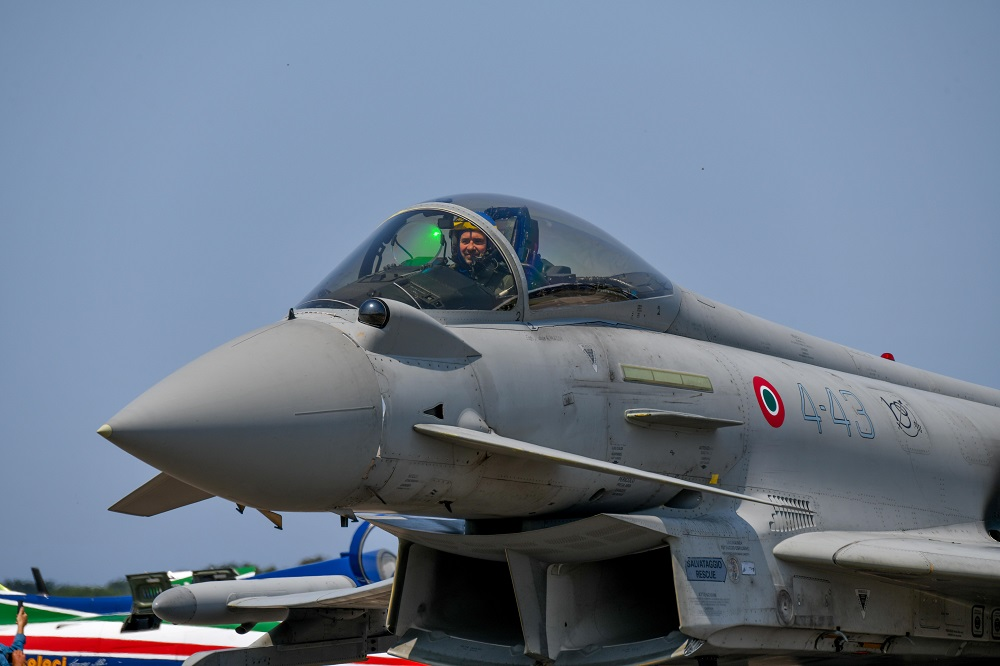
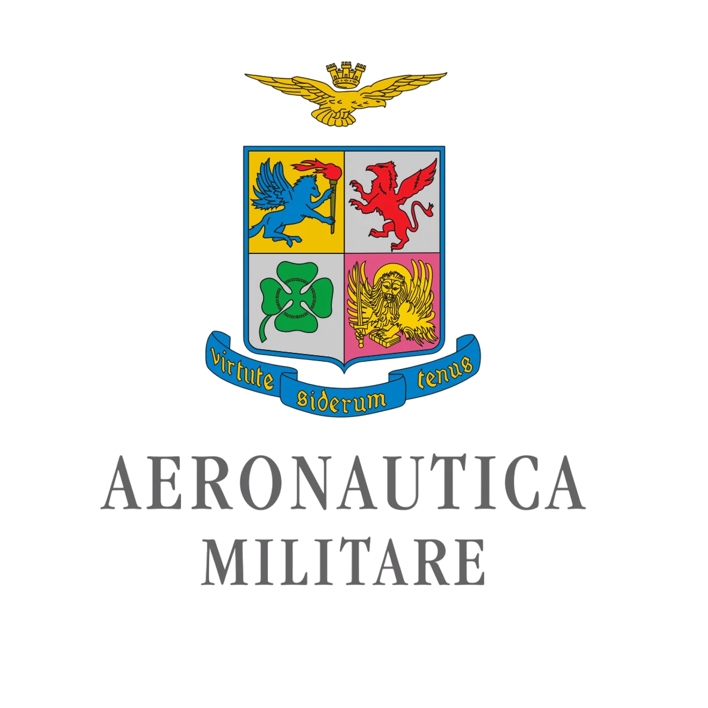
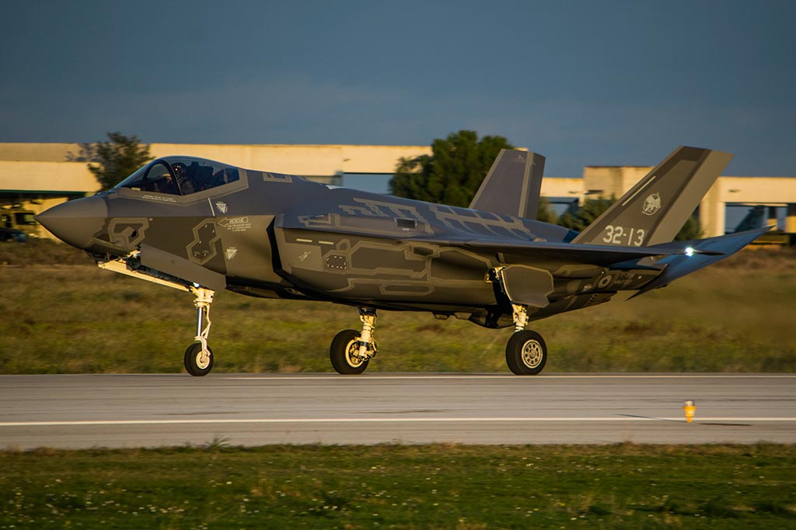
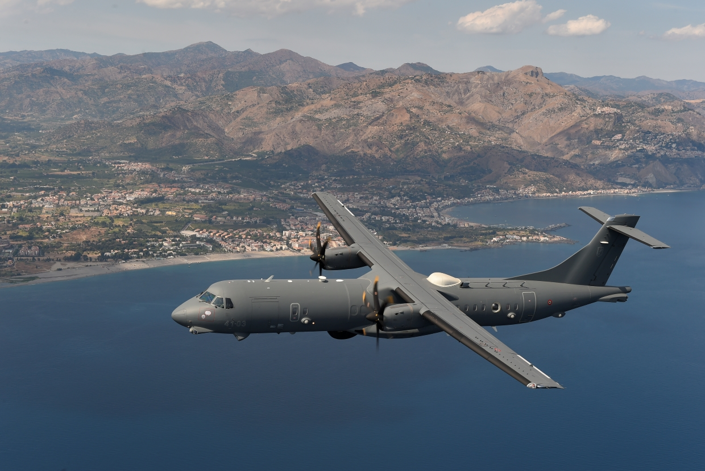
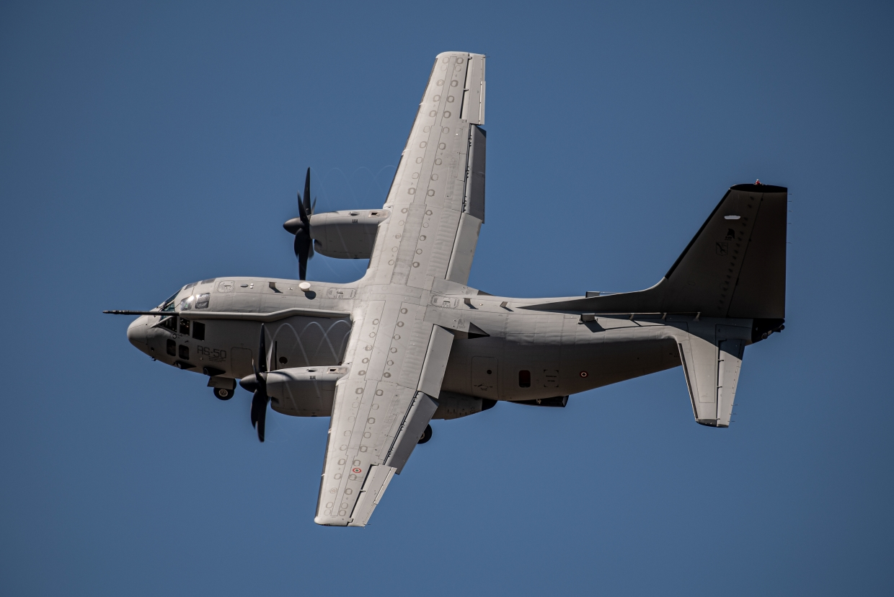
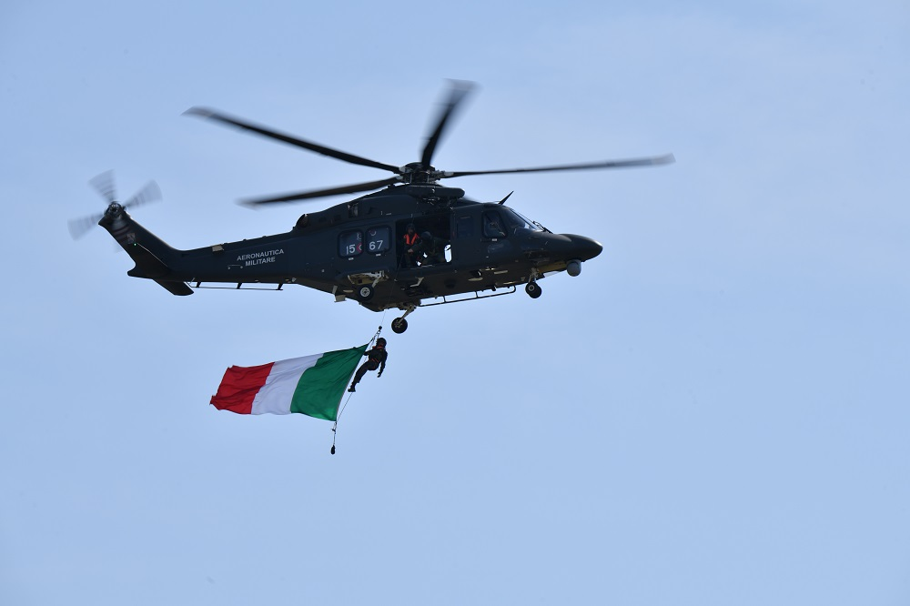
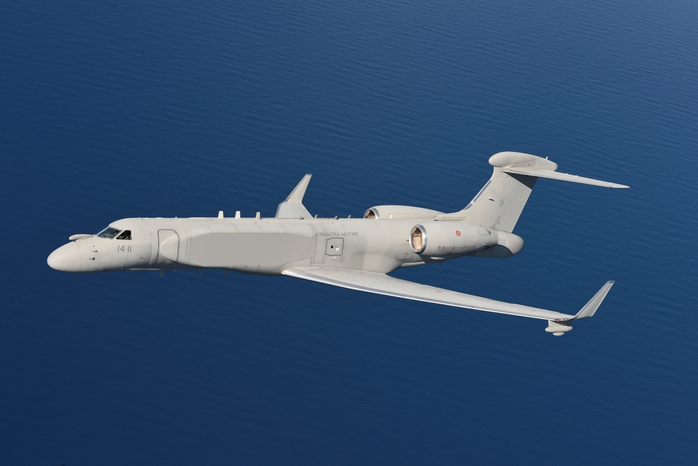
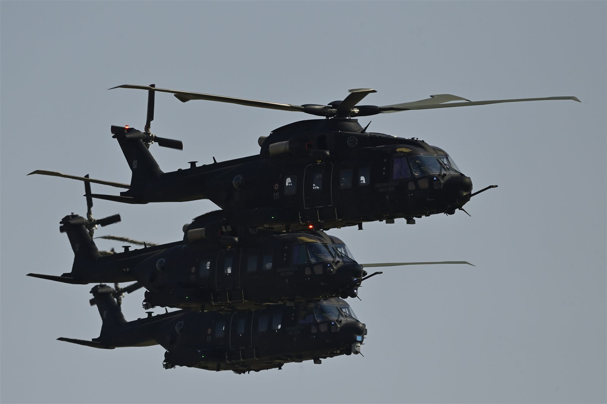
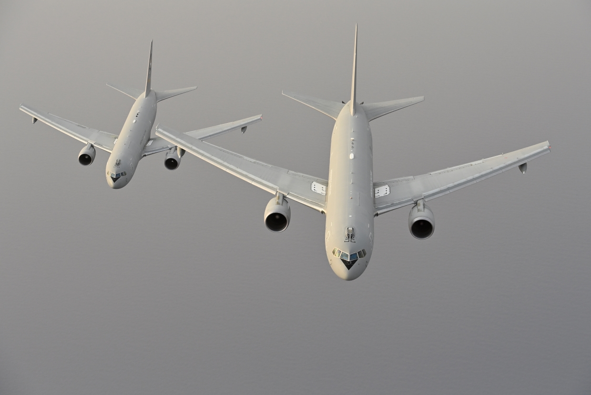

Difesa aerea
4° e 36° Stormo
Sorveglianza e prontezza con la linea Eurofighter.

Componente aerea
Competenza, prontezza e controllo dello spazio aereo. Esplora reparti, capacità operative, velivoli e gradi dell’Aeronautica.
Identità e compiti
L’Aeronautica riunisce capacità di difesa aerea, trasporto, sorveglianza, ricerca e soccorso. Equipaggi di volo, controllo, manutenzione e supporto operano come un unico sistema.
Preparazione tecnica, disciplina e coordinamento permettono di mantenere la prontezza in scenari diversi, dal controllo dei cieli al sostegno delle operazioni sul territorio.

Struttura operativa
Stormi e brigate con compiti complementari, dalla difesa aerea al trasporto e al soccorso.

Sorveglianza e prontezza con la linea Eurofighter.
Capacità F-35 e sistemi a pilotaggio remoto.

Sorveglianza marittima e ricerca a lungo raggio.

Trasporto, aviolancio e supporto logistico.
Identificazione, intercettazione e protezione dello spazio assegnato.
Trasporto di personale e materiali verso le aree operative.
Sensori, radar e comunicazioni per una visione condivisa.
Ricerca, recupero ed evacuazione in scenari complessi.
Attività operative
Quattro aree di impiego per sviluppare prontezza, coordinamento e sicurezza del volo.
Sorveglianza e intervento rapido per identificare e assistere i velivoli segnalati.

Recupero degli equipaggi e concorso alla salvaguardia della vita umana.
Movimentazione rapida di personale, materiali e supporti verso le basi.

Raccolta e condivisione delle informazioni per il comando e controllo.

Supporto aereo e recupero di personale in aree operative complesse.
Controllo di ampie aree e supporto alla ricerca sul mare.
Sistemi di volo
Una selezione di assetti da combattimento, trasporto, sorveglianza e soccorso.

Gerarchia
Gradi ordinati per categoria secondo la stessa impaginazione delle altre componenti.
Formazione
30 domande semplici su sicurezza, reparti, missioni, velivoli e terminologia aeronautica, con accesso Discord.